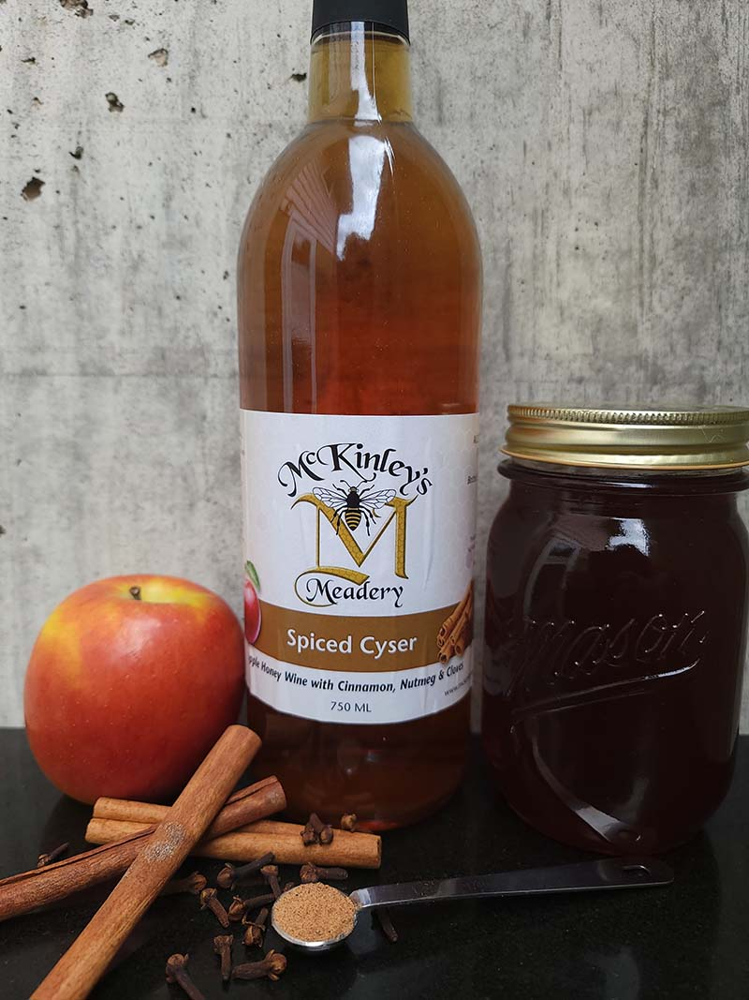

Gallon Spiced Apple Mead Recipe

Note: This recipe is used for an adult alcohol beverage. Don't consume alcohol unless you are legally allowed to!
Mead History:
Mead is the oldest alcohol beverage in the world, dating back to 6500 BC in northen China. It utilizes honey-based fermentation unlike wine, which uses primarily sugar instead.
Depending on the type of yeast used and amount of honey, you can expect around 12-18% ABV (alcohol by volume) when making most meads!
Be sure to drink responsibly. Skip this recipe entirely if it is against the law for your location or age.
This is one of my favorite recipes. You don't have to use these particular ingredients if you don't like apples or involved spices. You can get pretty creative when it comes to brewing!
Equipment Needed:
- A food-grade sanitizer such as Star San by Five Star
- A 1-Gallon carboy that can fit an airlock with stopper
- A transferring pitcher (or another similar carboy)
- An airlock with a cork stopper (to prevent nasties from coming in or vinegarization)
- A hydrometer with a cylinder to read your initial and final gravities of your brew
- A nice siphon for transferring your contents from primary to secondary fermentation and bottling (one with a filter and pump work best!)
- A funnel to pitch your yeast and add honey; keeps things nice and clean
- A scale to determine the amount of honey added
- A few bottles with screw-on lids (or if you want to be fancy, a corker with a few corks!)
- A baster for testing the flavor of your brew after some initial fermentation to determine if anything needs added (or there's too much of something)
- A note with tape to track your hydrometer readings and include ingredients you put in the brew. Additionally the start date of fermentation.
- A food thermometer for pasteurization if needed, such as when backsweetening
- A large metal cooking pot for pasteurization if needed
Ingredients Needed:
Preparation
Before adding your ingredients, one of the most important steps for brewing is to sanitize all your equipment!
In a large bucket (or serveral smaller buckets), follow your food-grade sanitization instructions and soak all equipment within the solution.
Be sure your sanitizer is FOOD GRADE, otherwise it can cause some unwanted or even dangerous results!
After everything is nice and clean, rinse everything with clean, filtered water. You're now ready to begin the steps for fermenting!
Add your Ingredients
- Start off with adding all your spices to the sanitized carboy: The allspice berries, cloves, raisins, cinnamon sticks, orange zest, and black tea.
- Next, add your honey using a funnel if you don't feel accurate pouring it without.
- Add the apple juice, but be sure to leave space (about 2 to 2 1/2 inches) from the top if there's too much apple juice
- If there's still a lot of remaining space, either fill the rest until you have that head space with either water or more apple juice.
Initial gravity reading
At this point, you can use a turkey baster to extract some of the liquid from the carboy into your cylinder to test the hydrometer reading.
A reading of 1.10 is great for a brew roughly to be around 12-15% ABV, but you can adjust the solution as you please until you have the initial gravity you desire.
Note: A higher reading may indicate higher ABV results, and a lower reading for lower ABV results.
Additionally, you'll want to write down your gravity reading on a note along with ingredients added and the date! This way you can know your ABV, remember the recipe used, and track how long the brew has aged.
Oxygenating and pitching the yeast:
- After finding the initial gravity of your contents, go ahead and pour the remainder from the cylinder back into the carboy.
- Be sure to seal your carboy and give it a good shake! The yeast need that oxygen in the beginning for the primary fermentation!
- The more you shake, the more oxygen that will enter inside the contents. I usually shake for about 10 minutes and it ends up fermenting well.
- Go ahead and pitch your yeast inside the carboy as the final ingredient. The yeast may float around for a bit, but they will eventually wake up and start munching away.
- Be sure to seal the carboy with your airlock and stopper with a bit of water in the airlock (which will be used to indicate fermentation is taking place)
Primary Fermentation
After several hours, you should start noticing bubbles are rising up inside the carboy and a head of foam around the top. Hopefully you left enough head space or it might bubble over!
If the contents do bubble over, be sure to clean it up and quickly sanitize your stopper. This way the fermentation can still continue and it's not a total disaster.
Additionally, to prevent mold contamination considering we are using raisins, be sure to give the carboy a swirl every other day to ensure this doesn't happen!
If you do notice any mold growth at the top of the mixture, you may want to throw the contents away and start over. Better safe than sorry! Having good sanitization ensures your brew wasn't a failure.
Don't mistake the foamy Krausen for mold! That stuff is totally fine and won't hurt you or your brew. This is what Krausen looks like: Krausen Explained
You may also notice a layer of sediment at the bottom of the carboy after awhile of fermentation. That is also fine and totally normal! It's mainly composed of dead/inactive yeast and particles that fall to the bottom.
After about 2 weeks or once you notice the airlock's water stops moving and reaches an equilibrium (and no mold growth), it is now time to move on to secondary fermentation.
Secondary Fermentation and Hydrometer Reading
It is now time to transfer your contents over to a sanitized pitcher or any other large container of your choice. The alcohol content should be high enough at this point that it's okay for it to be exposed to air once again.
- Go ahead and place the head part of your siphon into the carboy (just above the sediment to prevent collected as much as you can), and place the other end in the sanitized pitcher
- Siphon the contents until only the sediment and solid ingredients remain in the carboy. Note: If any sediment was siphoned as well in the new container, that's fine. It tends to happen and won't hurt you!
- Perform another hydrometer reading to see what the current ABV is. There's a particular formula for this:
The formula is: (Original Gravity - Final Gravity)*131 = ABV%
Or you can type your readings into an ABV calculator from a website such as: Brewer's Friend
- At this point you should have an idea of what your ABV is. Feel free to use your baster to transfer some of the content into a glass for a tasting. This allows you to determine if there is too much of something or too little of something. Now is the time to adjust those changes!
- NOTE: If your mead is too dry and would like to add more sugar, DO NOT add sugar and proceed just yet. That can re-activate the fermentation and make the alcohol percentage increase, making it too strong.
- You can add non-fermentable ingredients as you please, but just wait on adding sugar.
Secondary Fermentation
We want to make sure the brew has completely stopped fermenting! So we let our brew enter secondary fermentation.
- Go ahead and sanitize and rinse the carboy that you just used and siphon the mead from the pitcher back into it once it's ready.
- Sanitize your airlock and stopper once more, and place it back on your carboy (or new fermenting vessel).
- This stage is now called secondary fermentation, and we want to wait awhile to make sure the last hydrometer reading stays the same before bottling.
- After about a week, take another hydrometer reading. If the final gravity remains the same as before, then we can go ahead and move on to the pasteurizing (if adding sugar) or bottling stage.
- If the final gravity has dropped some numbers, then we may want to wait another week. Continue until the previous week's final gravity is the same as the current!
Finishing and bottling our mead
Now that your are certain your mead has completely stopped fermenting, we can finish and bottle it!
Backsweetening, if needed:
If you feel your brew is too dry and wish to backsweeten, we will need to prepare pasterization.
- Go ahead and siphon your mead back into a pitcher and add a little honey or sugar (quarter of a cup to start)
- Continue this process until you find the right amount of sweetness to your desire.
- Since we added more fermentable sugar, we will need to pasteurize the mead. Go ahead and siphon the mead back into your carboy
- Be sure to keep the airlock and stopper off the carboy this time since we will be heating our mead
- Place your opened carboy with mead in a large metal pot with water inside it. Be sure to not overfill or the water will boil over
- With your thermometer, heat the pot of water with the carboy of mead until the temperature of the mead reaches 150 degrees Fahrenheight.
- Try to maintain this temperature for about 5 minutes. This is to ensure all the yeast are dead and can no longer ferment the mead further.
Bottling the Mead
Although our mead is now ready to be enjoyed, portion control is an extremely important aspect for responsible drinking!
- Whichever container your mead ended up, go ahead and sanitize all your bottles.
- Carefully siphon your mead into a bottle, making sure not to overfill
- Repeat this until the carboy or pitcher is empty
Enjoying your Mead
If you enjoy your brew as it is, feel free to (responsibly) consume your homemade beverage!
However, sometimes the mead can develop to be more complex and flavorful with age
This aging process allows the mead to mellow out and taste less harsh, allowing a lot of the ingredients to come forward!
If you wish to age your mead, keep the bottles in a dark, cool place (light can oxidize, hence why we store them in a dark location)
After 4-6 months or even as long as a year, you may notice the taste has drastically improved!
Enjoy!